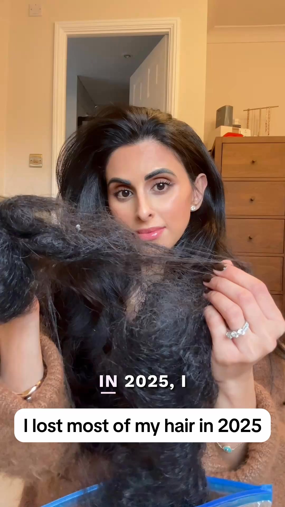
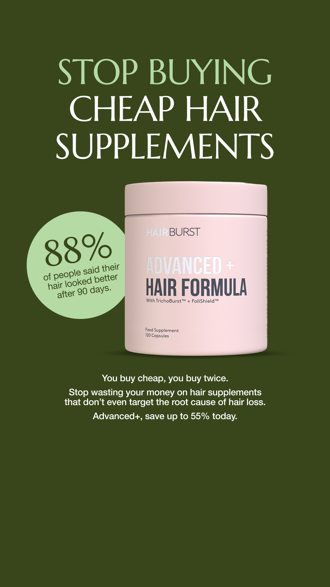

Creative audit · prepared for Hairburst
HairburstThe Gap Playbook
I pulled 66 of your live ads from your public Meta Ad Library and mapped them: every angle, audience, and awareness level in that batch. Here is what is working, where you are crowded, and the one hole that is costing you the most.
Your diversity score is how widely the account spreads across audiences, awareness stages, angles, and formats. Your strongest area is format variety. Where you lose the most is coverage (how many audience-by-awareness boxes have an ad).
The one finding that matters
Across the 66 ads I pulled, not one speaks to an unaware buyer, someone who does not yet know they have the problem. Your Unaware stage is completely empty.
What is already working
Your winning ads
I can’t see inside your ad account, so I rank winners the only honest way from the outside: how long an ad has stayed live. The longer it runs, the more likely it is paying. Here are all 10, longest-running first, broken down the four dials I mix to build ads: Concept, Angle, Style, Hook (CASH), plus the avatar and awareness stage each one hits.
| Concept | Angle | Style | Hook | Hook type | Avatar | Awareness | Run | ||
|---|---|---|---|---|---|---|---|---|---|
 | Postpartum stress loss reversed with Advanced+ | Customer Transformation | Video · Problem to solution video | “In 2025, I lost most of my hair” | Confession | Postpartum mums | Problem-aware | 35d | Ad ↗ |
| Postpartum loss, a scalp biopsy, then the fix | Customer Transformation | Video · Podcast-style clip | “I went for that scan and that test and it was one of the worst days of my life.” | Confession | Postpartum mums | Problem-aware | 35d | Ad ↗ | |
| 11-month journey from thinning to fullest hair | Customer Transformation | Video · Creator talking to camera | “So, I was on FaceTime to the girls, this is my balcony where I live, and I was showing them my cute little holiday outfit” | Relatability | General female thinning/shedding | Solution-aware | 35d | Ad ↗ | |
| A self-care Sunday routine with the products | Outcome Led | Video · Lifestyle montage | “There is nothing like a self-care Sunday...” | Relatability | Broad / unsegmented | Product-aware | 35d | Ad ↗ | |
| Reversed hairline thinning from tight styles | Customer Transformation | Video · Creator talking to camera | “Recently I've had so many people asking what I'm using on my hair.” | Curiosity | General female thinning/shedding | Solution-aware | 35d | Ad ↗ | |
| £100 in free gifts on the 3-month plan | Price Value | Static · Offer / discount | “£100 WORTH OF FREE GIFTS” | Desire Led | Broad / unsegmented | Most-aware | 35d | Ad ↗ | |
| Postpartum before/after: 6 and 12-month regrowth | Customer Transformation | Video · Before / after video | “that is six months after my postpartum hair loss journey” | Before After | Postpartum mums | Problem-aware | 32d | Ad ↗ | |
 | One year from clumps to thick, healthy hair | Customer Transformation | Video · Creator talking to camera | “My hairdresser cannot believe how much hair I have after taking this for a whole year.” | Bold Claim | General female thinning/shedding | Product-aware | 32d | Ad ↗ |
| One year from clumps to thick, healthy hair | Customer Transformation | Video · Creator talking to camera | “My hairdresser cannot believe how much hair I have after taking this for a whole year.” | Bold Claim | General female thinning/shedding | Product-aware | 32d | Ad ↗ | |
 | Buy cheap, buy twice: Advanced+ vs the rest (88%) | Comparison Led | Static · Us-vs-them image | “STOP BUYING CHEAP HAIR SUPPLEMENTS” | Cost Comparison | Broad / unsegmented | Solution-aware | 32d | Ad ↗ |
Your account, mapped
The Creative Diversity Matrix
Avatars down the side, awareness stages across the top. Every ad you run lands in one box. The goal is simple: fill the gaps.
| Unaware | Problem-aware | Solution-aware | Product-aware | Most-aware | |
|---|---|---|---|---|---|
| Postpartum mums | 11 | 3 | |||
| GLP-1 / weight-loss shedders | 9 | 2 | 1 | ||
| Menopause / peri (45+) | 2 | ||||
| General female thinning/shedding | 13 | 6 | 4 | ||
| Broad / unsegmented | 3 | 5 | 5 | 2 |
You cover 13 of 25 boxes, and your busiest lane holds 19.7% of your ads. That is healthy spread. Now look at the left column: the entire Unaware stage is empty.
By the numbers
How your account actually breaks down
Straight from the ads, no interpretation. This is the objective shape of what you run.
Your current mechanism
The cause you blame, and the fix you credit
What you blame
41 of 66 ads name a cause, split across 7.
What you credit
The unique fix your ads repeat.
You repeat one fix well, but blame 7 different causes, so no single reason sticks in the market’s head. Lock onto one clear cause and own it the way you already own the fix. That is usually the fastest lever in an account.
Where the traffic goes
Funnel pages, ranked
Ranked by how many ads point to each and how long they run. It shows what you trust, and what you have not tried yet.
You send most traffic to listicles, product pages, quizs. I do not see any advertorials in the mix, worth a look, not a prescription.
The gap I would attack first
Postpartum mums x Unaware
Everything you run assumes the viewer already feels the problem. Nothing catches postpartum mums earlier, while they still do not know they have it. That unaware audience is far larger than the warm one you target now, and it is where the cheap scale lives. The move: a story-led video or a native-style image ad, the kind that does not look like an ad, built for postpartum mums. You have already proven this audience buys, so it is a low-risk way into the one stage you are not running.
I found 12 gaps in total, ranked by odds. This is number one. The other 11, and the first ad built and ready to launch, we go through together.
What I’d test
Your biggest next play is story-led unaware ads for postpartum mums. I think both would work for a simple reason: you have already proven this audience buys, and the Unaware stage and a single clear message are the two biggest levers you are not pulling yet. Reply to my email and I will build the first one, before we talk about anything else.
Or reach me hereHow to read this: this is built entirely from your public Meta Ad Library, what is running and for how long, never your private cost, click or revenue numbers. "Working" means an ad is long-running or heavily scaled, which is a strong free signal, not confirmed profit. Treat the plays above as where I would test, not gospel.
Prepared by Ben Lomon · July 2026